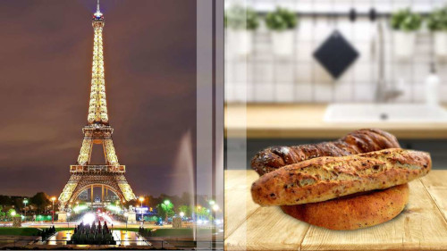

Secondo gli archeologi, la storia del pane ha più di 30.000 anni. Andrebbe così indietro al di là della comparsa dell'agricoltura. A parte il suo semplice ruolo di nutrimento, per alcuni oggi è diventato un simbolo religioso. Altri lo collegano alle espressioni artistiche. Quindi è ovvio: il pane è ormai parte integrante della cultura di molti paesi del mondo.
Pane a lievitazione naturale, pane azzimo, pane integrale, pane di campagna, pane ai cereali o pane bianco... Da una regione all'altra, le caratteristiche del pane, il suo gusto e le sue qualità nutrizionali possono variare molto a seconda delle ricette e delle tradizioni. Niente di meglio per scoprirli che un piccolo giro del mondo ricco di sapori e curiosità.
Francia, baguette

All'estero il cliché è consolidato. Chi conosce la Francia solo attraverso le sue cartoline pensa davvero che se venisse a visitare Parigi, incontrerebbe per strada parigini in berretto, baguette fresche sotto il braccio. E i panettieri francesi che chiedono l'inserimento della baguette nel Patrimonio Culturale Immateriale dell'Unesco stanno contribuendo a mantenere questa immagine.
Comunque, in Francia, la baguette è una tradizione. Alcuni dicono che sia nata ai tempi di Napoleone. La sua forma allungata ne facilita il trasporto da parte dei soldati. Altri credono che sia un cimelio del pane viennese, già di forma ovale anziché tonda. Altri ancora immaginano che sia stato inventata appositamente come una pagnotta che poteva essere tagliata senza coltello. Sarebbe quindi stata resa popolare perché richiedeva meno lievitazione e tempo di cottura rispetto ad altri pani.
Dal punto di vista salutistico, si noti che la baguette non ha un particolare valore nutritivo. È addirittura a base di farina bianca - è, tra l'altro, anche ricca di glutine - con un alto indice glicemico. Ciò significa che gli zuccheri in esso contenuti passano rapidamente nel sangue e possono quindi essere facilmente immagazzinati come grasso. La baguette è anche generalmente ricca di sale. Inoltre prediligete sempre la cosiddetta baguette tradizionale, perché realizzata senza additivi, con farine di migliore qualità.